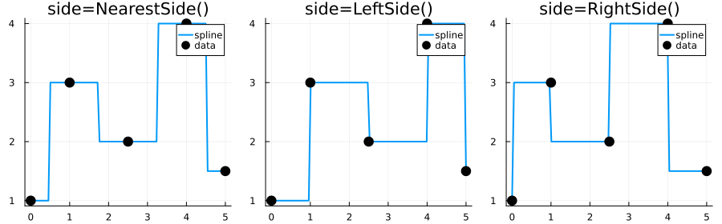

Constant Interpolation
Step function interpolation that returns values from neighboring data points without blending.
Key Feature: The side keyword controls which neighbor to sample using AbstractSide types.
| Mode | Behavior |
|---|---|
NearestSide() | Nearest neighbor — default |
LeftSide() | Left-continuous (use left neighbor) |
RightSide() | Right-continuous (use right neighbor) |
Usage
using FastInterpolations
x = [0.0, 1.0, 2.5, 4.0, 5.0]
y = [1.0, 3.0, 2.0, 4.0, 1.5]
# One-shot evaluation
constant_interp(x, y, 1.5) # → 3.0 (nearest neighbor)
constant_interp(x, y, 1.5; side=LeftSide()) # → 3.0 (left neighbor)
constant_interp(x, y, 1.5; side=RightSide()) # → 2.0 (right neighbor)
# Create reusable interpolant
itp = constant_interp(x, y; side=NearestSide())
itp(1.5) # single point
itp([1.0, 2.0]) # multiple points
# In-place evaluation (zero allocation)
xq = range(x[1], x[end], 100)
out = similar(xq)
constant_interp!(out, x, y, xq)
# Derivatives (always 0 for step function)
constant_interp(x, y, 1.5; deriv=DerivOp(1)) # → 0.0
d1 = deriv1(itp); d1(1.5) # → 0.0Side Modes Comparison
using FastInterpolations
using Plots
x = [0.0, 1.0, 2.5, 4.0, 5.0]
y = [1.0, 3.0, 2.0, 4.0, 1.5]
xq = range(x[1], x[end], 100)
sides = [NearestSide(), LeftSide(), RightSide()]
labels = ["NearestSide()", "LeftSide()", "RightSide()"]
p = plot(layout=(1,3), size=(900, 280), legend=:topright)
for (i, (side, lbl)) in enumerate(zip(sides, labels))
yq = constant_interp(x, y, xq; side=side)
plot!(p[i], xq, yq, label="spline", linewidth=2)
scatter!(p[i], x, y, label="data", markersize=7, color=:black)
title!(p[i], "side=$lbl")
end
p
When to Use
- Discrete states or categories
- Sharp transitions must be preserved
- Monotonicity preservation is critical
- Lookup table behavior